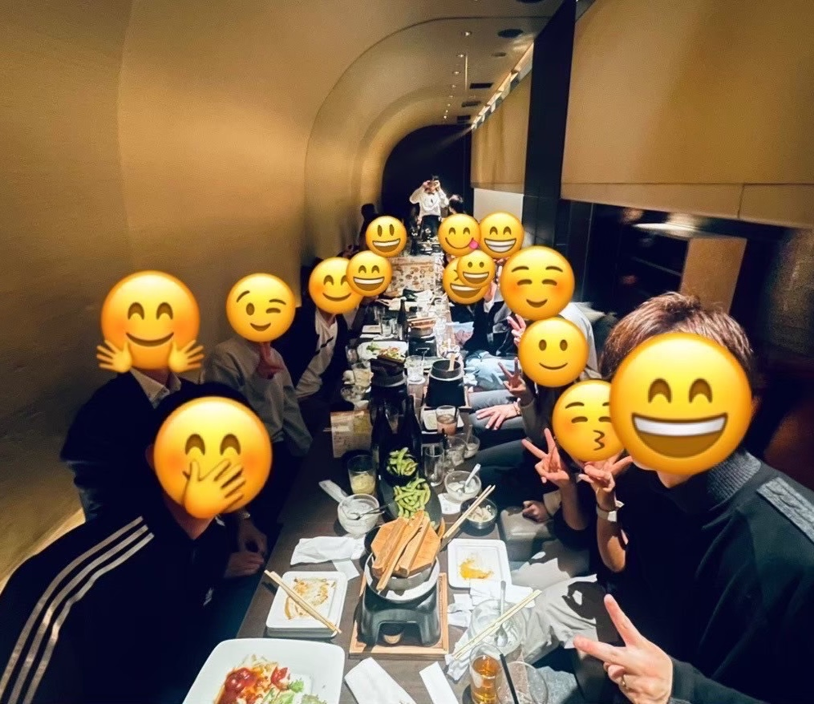

教員コミュニティ『ジーニー』のZOOM教員交流会へようこそ。異なる学校の先生が集い、本音で語り合い、学び合うオンラインの居場所です。まずは交流会に参加してみることが、そのまま入会の説明会を兼ねています。
現役の先生はもちろん、教員を目指す学生・管理職・教育委員会の方まで、立場を越えて参加できます。定期的に勉強会・交流会を開催し、日々の実践や悩みを安心して分かち合える場所です。
「一人で抱え込まない教員人生」を、全国の仲間と一緒に。

下のフォームから「ZOOM教員交流会」に申し込み。この参加が入会の説明会も兼ねています。
毎週水・木 21:00〜の定例交流会など、オンラインで気軽に参加できます。
分からないことや個別の相談は、いつでも公式LINEで受け付けています。